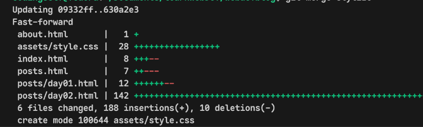

Today, my goal is to stylize this blog a little more starting with this navbar.
I will be externalize my CSS file now in the assets/style.css
Problems I Faced
First, Problem I faced was adding the external css file to all the html files using link tag.
as I was using relative path to specify the path of style.css in the assets/style.css
But the posts html page was finding the assets folder inside it's posts/ folder. And to use absolute path causes problems in my local live server and the GitHub pages which has different url
What I've Learned
I learned about the
<pre></pre> tags
and escape characters for html to display the code and html tags as it is without the browser rendering it.
I also learned to use git branch && git checkout -b. Quite important in case I mess something up so I can always revert but still figuring out lot of things in git
I did git merge successfully, I have merge the stylize branch to the main branch.
here is the output of the terminal below:

Terminal Output of git merge stylize to main branch
Now, I have use the flexbox somehow still not quite sure about the theory behind it but using flexbox with Dev Tools of the browser did the job.
learning to use the DevTools of the browser is necessary I realized. I can visualize the box models, css properties and it also has in-built color picker.
Now, if any of you have some ideas on the UI design to make it more beautiful and fast while keeping the design minimalist then, You can suggest me.
Here is it the style.css code below:
body {
background-color: #FFFF;
}
nav {
display: flex;
width: 100%;
flex-direction: row;
justify-content: center;
}
nav ul {
list-style-type: none;
display: flex;
flex-direction: row;
justify-content: space-between;
margin-right: 20px;
}
nav ul li {
padding: 10px;
}
nav ul li a {
text-decoration: none;
font-size: larger;
}
If you are also learning Web Development or Aspiring to be a Full-Stack Web developer then, Join me on this journey by hitting me up on my social media handles: